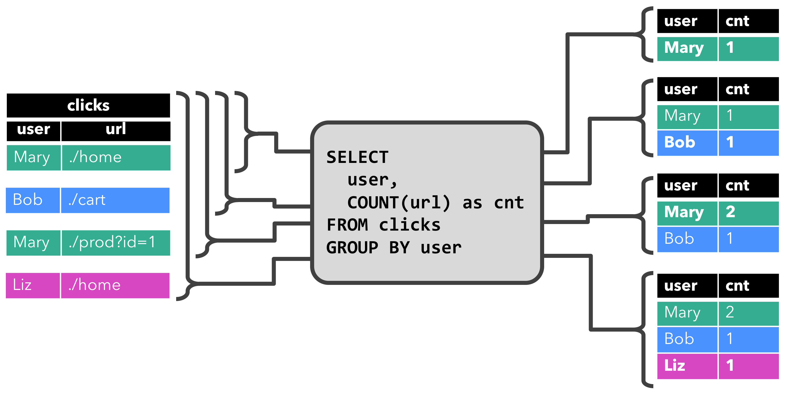
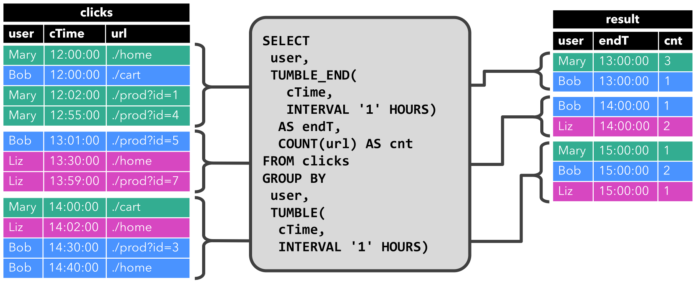
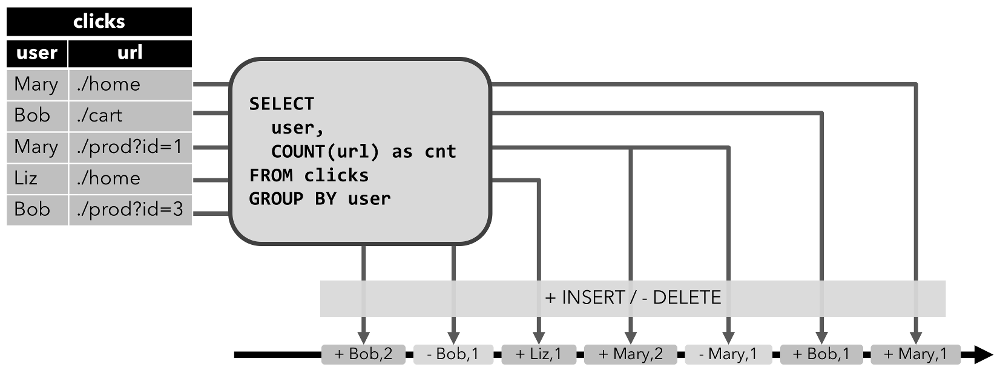
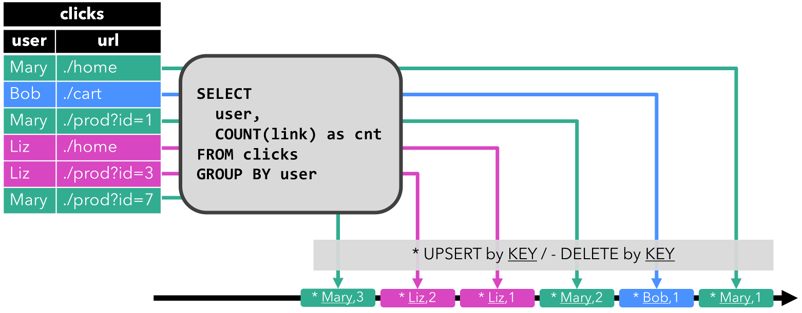

Flink 动态表 (Dynamic Table) 解读
根据过去在流上维持状态的编程经验，我们可以深刻地体会到： Dynamic Table 最核心的底层逻辑是：本质上，它是一条流（Stream），在启动流式查询或从上游流转换为下游流的过程中，它基于流过的 changelog 数据流来维持一张逻辑上的表，表中的数据可以被实时更新，默认是物化在内存中。
动态表是 Flink 能以 SQL 驱动和操纵流式处理的基础，也是 Flink 实现 ”批流一体“ 的一项内在的技术支撑。简单地说，它的思想就是：将一个”流“抽象成一张”无界”的数据表，这样就可以在上面施加 SQL 操作了。静态的关系表和数据流有可以类比的地方，这是能将两者映射在一起的理论基础，同时，它们之间也有难以弥合的差异，所以在某些方面要进行限制或做出适当的妥协。文本将以 Flink 官方文档： 动态表 (Dynamic Table) 为基底，给出一些批注式的解读。
1. 对齐“概念”
首先，让我们来统一一些概念，对于一张动态表的查询可以有两个层面的解读，从上层应用的角度看：它就是一条 SQL，在查询一张表，只不过这张表是动态的，它的查询结果会一直在变（不同时间查，结果是不一样的），相应地，这条SQL其实是一直在跑的（不是反复查询，而是是一个持续运行 streaming job)；从底层实现的角度看，这条 SQL 其实是被翻译成了一个Streaming 作业，从源端不停地读取 changelog 数据，然后在流上维持一个”状态“数据，状态数据就是 SQL 要表达的结果表。所以：
查询动态表就是生成一个连续查询（一个 Streaming Job），一个连续查询是不会终止的（流是不会自行终止的，动态表是“无界”的），结果会生成一个动态表 (Streaming 上的 ”状态“)，查询会不断更新这张结果表（更新状态），实时地反映新流入的数据后对结果表的影响（同样的条件，不同时间查询，结果也可能不同，结果表里的数据可能一直在变）。
为了方便描述，我们可能会交替使用以下称谓或术语，它们指得都是同一件事情：
流式 SQL 查询 <=> 查询动态表 <=> 连续查询
2. “动态表” 两例
Flink 官方文档给出的两个张”动态表“的图示还是非常形象的，也是后面解释关联问题的基础，所以，这里先列出来：
- 第一个示例：

- 第二个示例：

3. 动态表的“动态”性：持续 “更新” or “追加” 中…
既然连续查询是永不停止的，那么结果表自然也是一直在变化的，它要么是在持续“更新”记录中，要么是在持续 “追加”记录中，至于是更新还是追加，取决于查询本身的逻辑。上节给出的两个持续查询的示例恰好一个是更新，另一个是追加：
-
第一个查询的结果表是需要”持续更新“的（有 UPSERT 操作），以 Mary 为例，她的 cnt 从 1 到 2 时就是一次更新
-
第二个查询只附加到结果表，即结果表的 changelog 流只包含
INSERT操作。
“追加”的情形很容易理解，既然数据是源源不断“涌入” Flink 引擎的，一条简单的持续查询 select * from table_x 得保证新涌入的数据能及时出现在查询结果中；而 “更新”就显得有些复杂了， 如果一个连续查询 ( Continuous Query ) 先前输出的结果会因后续新增或更新数据的加入而不再准确，就需要持续地根据新流入的数据 + 此前已接入的数据重新计算结果并更新之，这就需要流处理引擎必须“维持住”已经输出的结果，以便后续能实时地更新它们 ！这就是需要 “持续更新”的场景，典型的 “持续更新”场景是查询中出现了聚合计算（count, sum, avg 等）或者是像 upsert- kafka 这类connector 在处理 changelog 数据流时需要针对每一个 ID 维持一条记录，然后基于流入的 I/U/D 消息实时更新输出的结果。
4. 查询限制
尽管动态表的概念在语义上能将SQL（二维关系模型）比较好地映射到流上，但还是会有一些“力所不能及”的地方，这主要体现在对查询的一些“限制”上。有两 类 典型的限制：
-
维持了过多/过大的“状态”：这一点比较好理解，如果你的流式查询的结果表每一条都是一个”状态“，那流就需要一直维持这个状态，表的结果集绝大，维持的状态就越大/越大，直到程序因资源不足最后报错。此类案例就是：在第一个查询示例中，如果结果表中的每一条用户数据都是一个”状态“（可被 Upsert ），如果用户数量巨大，这个 SQL 就会报错，因为维持的 ”状态“ 负担太大；
1
2-- 若用户数量过多，则维持的状态就会过多过大，可能会消耗大量资源
SELECT user, COUNT(url) FROM clicks GROUP BY user; -
更新的数据量过大：通俗一点说就是：更新牵涉的数量太大，这一点在基于静态表的批量查询中并不会体现出来，但基于动态表的流式 SQL 查询是”连续查询“，它会不停地查询，不停地更新结果表，此时，如果查询每次都要更新大量已输出的结果行，那么查询成本就会被叠加”放大“，变得非常高！此类案例就是官方文档给出的示例，每此有新记录产生，都要重新进行排名，更新所有已输出的行，对于不停刷新的动态表来说，这一操作成本太大。
1
2
3
4
5-- 每此有新记录产生，都要重新进行排名，更新所有已输出的行，对于不停刷新的动态表来说，这一操作成本太大
SELECT user, RANK() OVER (ORDER BY lastAction)
FROM (
SELECT user, MAX(cTime) AS lastAction FROM clicks GROUP BY user
);
5. 流／表转换
动态表可以看作是一种用户角度上的“逻辑视图”，底层依然还是一个 Stream ，这就涉及到上层逻辑视图和下层物理实现之间的“映射”和“转化”问题。 动态表可以像普通数据库表一样被修改的原因在于：流入的消息除了包含变更的数据本身，还得能“表达”是何种操作（INSERT、UPDATE 和 DELETE 三种中的一种），这种数据其实就是 changelog 类型的数据（与 CDC 数据类似），Flink 得统一这种消息的表达格式，官方文档的叫法是：针对动态表的变更进行“编码”（encode the changes of a dynamic table） 。
Flink的 Table API 和 SQL 支持三种方式的“编码”来表达和处理一个动态表的变化:
-
Append-only 流： 仅通过
INSERT操作修改的动态表可以通过输出插入的行转换为流。 -
Retract 流： retract 流包含两种类型的 message： add messages 和 retract messages 。通过将
INSERT操作编码为 add message、将DELETE操作编码为 retract message、将UPDATE操作编码为更新(先前)行的 retract message 和更新(新)行的 add message，将动态表转换为 retract 流。下图显示了将动态表转换为 retract 流的过程。
-
Upsert 流: upsert 流包含两种类型的 message： upsert messages 和 delete messages 。转换为 upsert 流的动态表需要(可能是组合的)唯一键。通过将
INSERT和UPDATE操作编码为 upsert message，将DELETE操作编码为 delete message ，将具有唯一键的动态表转换为流。消费流的算子需要知道唯一键的属性，以便正确地应用 message。与 retract 流的主要区别在于UPDATE操作是用单个 message 编码的，因此效率更高。下图显示了将动态表转换为 upsert 流的过程。
Flink 动态表 (Dynamic Table) 解读